夏吉
ゆうこ。
YUKO NATSUYOSHI
從甜點貓，到麥克風前的她。
我喜歡的，是那份自由與安靜的反差。
Danny 的聲優手帖 / 非官方個人專題
探索出演作品 ↓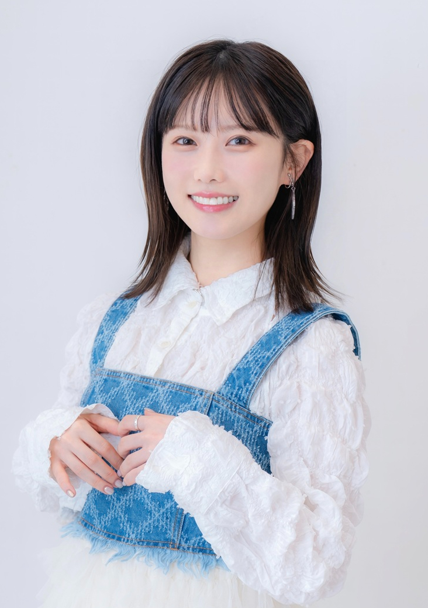
PHOTO © KEN PRODUCTION ↗先記住角色，
再驚訝原來也是她。
現在的聲優，往往不只需要配音，也要唱歌、上節目、站上舞台。外貌、舞台魅力與各式各樣的才藝，都成為大家認識一位聲優的入口。但對我來說，最讓我在意的，始終是她能不能用聲音，讓角色真正活起來。
夏吉ゆうこ就是這樣讓我著迷的人。我覺得她的配音實力，在新生代裡很突出。同一位聲優，能讓不同角色擁有自己的語氣、節奏與情緒；有時候沒先看出演名單，我甚至不會立刻認出那是她的聲音。
— DANNY / 我的聲優手帖先認識夏吉。
- 姓名
- 夏吉ゆうこ / 夏吉優子
- 出身
- 日本大阪府
- 生日
- 5 月 1 日
- 所屬
- 賢プロダクション
- 音樂
- Arika · Vocal / Lyrics
夏吉的活動橫跨動畫、遊戲、舞台與音樂。認識她，可以從一個角色開始，也可以先聽一首歌：在這些不同的作品裡，同一位表演者會留下不同的聲音印象。
她從小接觸聲樂，高中時也參加輕音樂社。除了聲優工作，還在雙人組合 Arika 中擔任主唱並參與作詞；音樂並不是角色演出之外的一個小註腳，而是另一條值得慢慢認識的路線。
這份手帖從我最喜歡的千砂出發，接著整理角色作品、角色歌與音樂活動。想看表演，就走進故事；想聽她本人如何唱歌，就轉到 Arika 或現場演出。
人物資料 / 經紀公司官方介紹 ↗從角色裡，唱到鏡頭前。
《超時空輝夜姬》演出收藏
夏吉ゆうこ × 早見沙織

跟著夏吉，
出門找喜歡的事。

夏吉ゆうこの
アーケードでいきましょう
CHANNEL / @yuko_natsuyoshi一個跟著夏吉尋找「喜歡」的外景綜藝。走進感興趣的地方，體驗想做的事情，讓好奇心決定這一趟要往哪裡走。
她喜歡喝酒，剛好也和我的興趣相符。我尤其喜歡早期節目裡，她偷偷喝上一口的樣子：有點調皮，又很自在，實在很可愛。比起刻意維持形象，我更喜歡那些不經意流露出來的反應。
現在我比較少在公開場合看到那麼奔放的她，但在自己的番組裡，仍然能遇見那份自由。看她出門探索、聊天，認真享受自己喜歡的事情，對我來說，也是認識夏吉很重要的一部分。
吸引我的，還有我感受到的反差：鏡頭前很放得開，鏡頭之外給我的印象卻是安安靜靜的。角色之外的她，又是另一種吸引力。
節目介紹與圖片：官方頻道。部分內容依平台訂閱方案提供。
同一個名字，不同的相遇。
語氣、節奏與情緒各有自己的樣子。這些角色，讓我一次次驚訝於她的聲音。
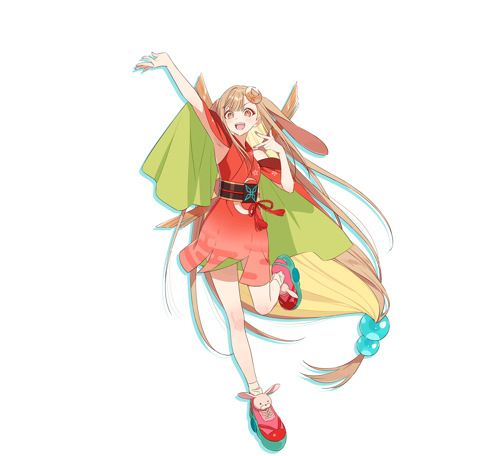
かぐや
超かぐや姫！ / 超時空輝夜姬
我喜歡かぐや開朗活潑的聲音。語氣裡那股往前衝的能量，讓角色不只是熱鬧，也讓我想跟著她一起走進故事。
官方圖片來源 ↗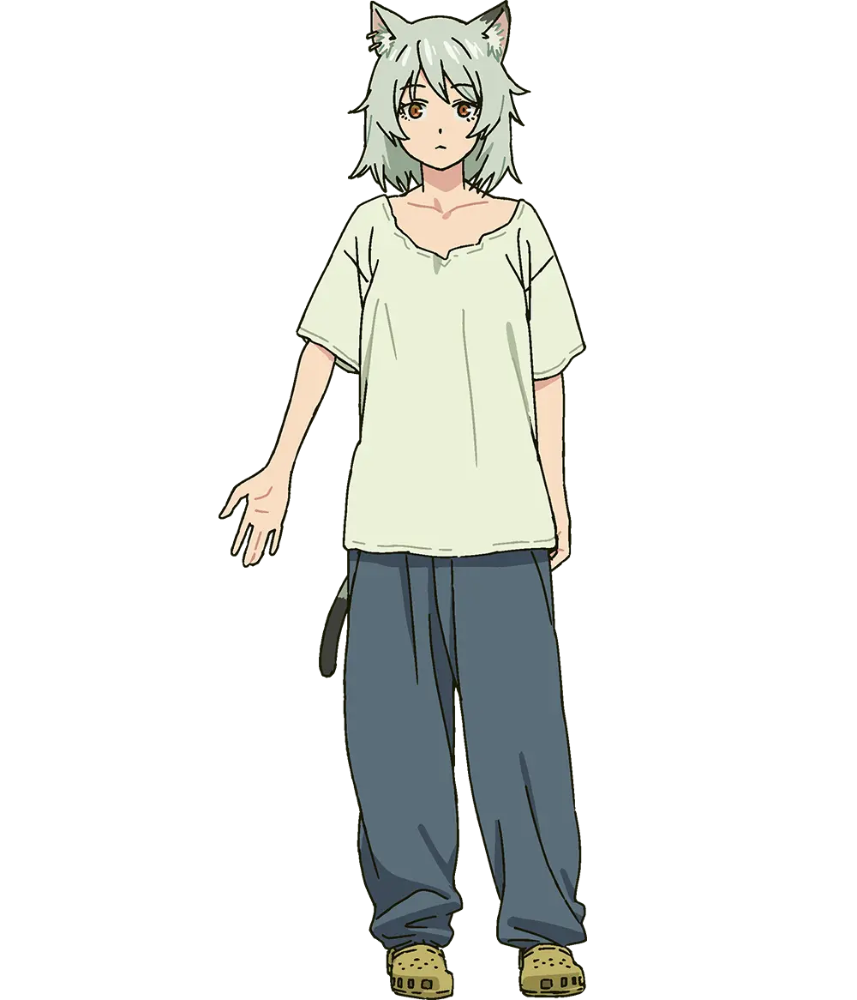
ヤニねこ
ヤニねこ / 尼古貓貓
我喜歡她在這個角色裡自由、多變的演出。和千砂的親密、かぐや的活潑放在一起聽，更能感受到她塑造角色的幅度。
官方角色圖片與配音資料 ↗サーシャ・ネクロン
魔王学院の不適合者
我聽見的是身為姐姐的責任感。和千砂的親密語氣相比，她在這裡讓角色站得更穩，也讓我更注意到演技的差異。
官方圖片來源 ↗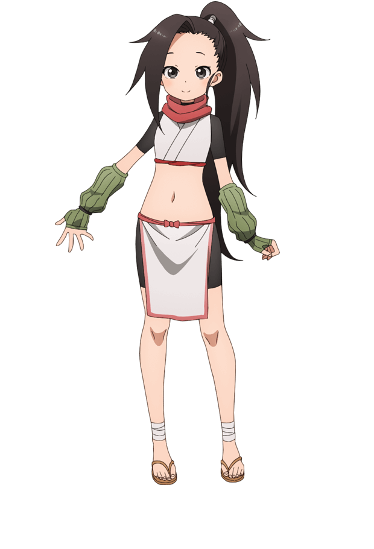
ツバキ
くノ一ツバキの胸の内
擔任主角椿的配音；想繼續探索她的主役作品，可以從這部開始。
官方圖片來源 ↗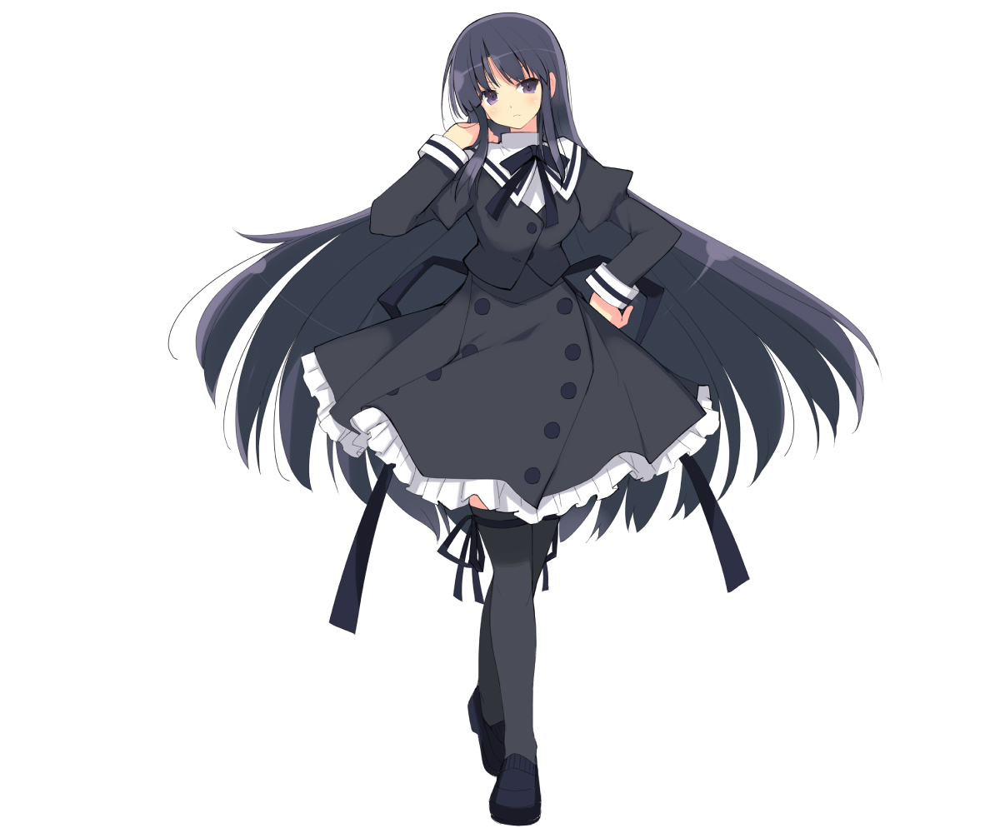
白井夢結
アサルトリリィ BOUQUET
這個名字同時出現在動畫、遊戲與舞台，是跨媒介認識她的一條線索。
官方圖片來源 ↗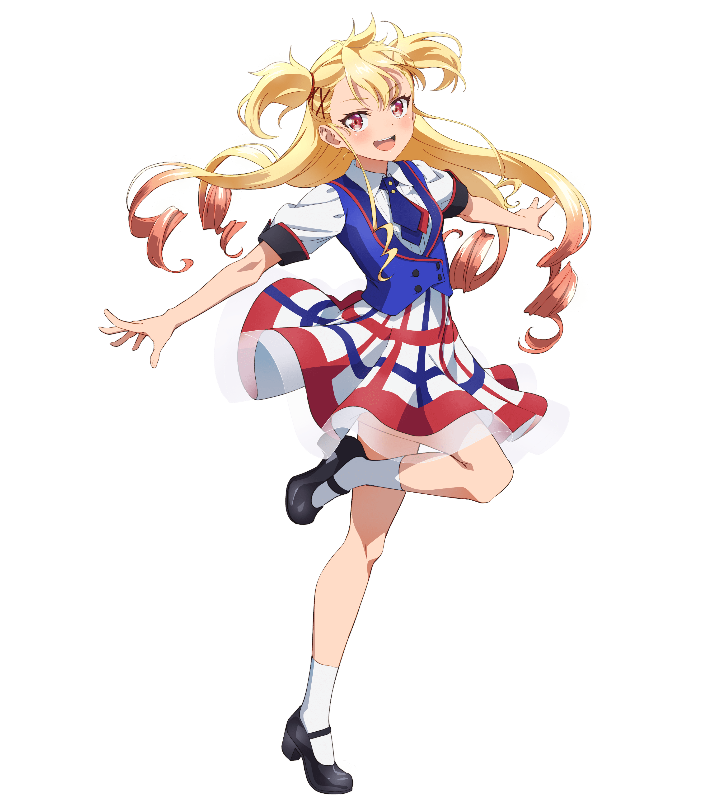
聖舞理王
シャインポスト
從角色表演走向偶像與歌聲的作品，適合接著音樂活動一起認識。
官方圖片來源 ↗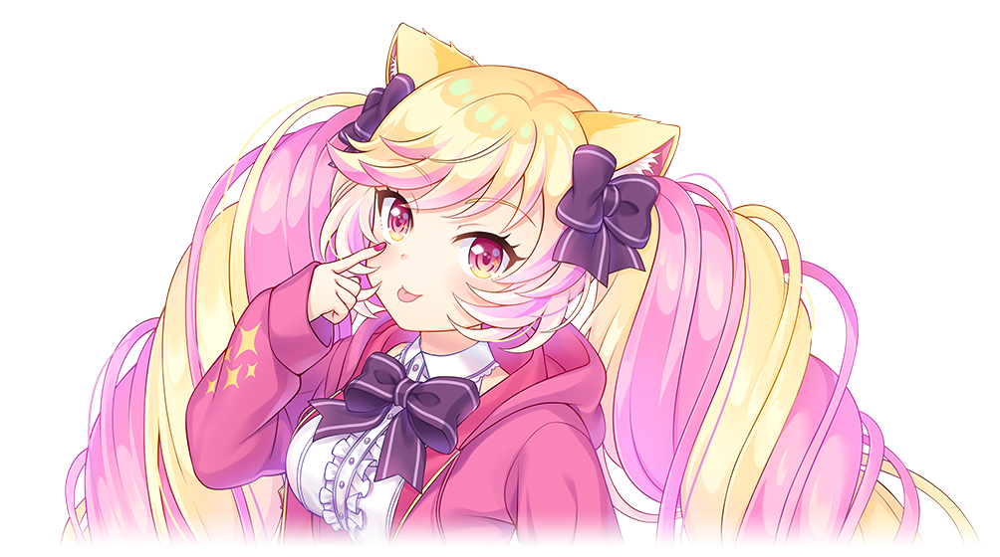
マシマヒメコ
SHOW BY ROCK!! ましゅまいれっしゅ！！
另一個和音樂相連的角色，也於系列遊戲與動畫中登場。
官方圖片來源 ↗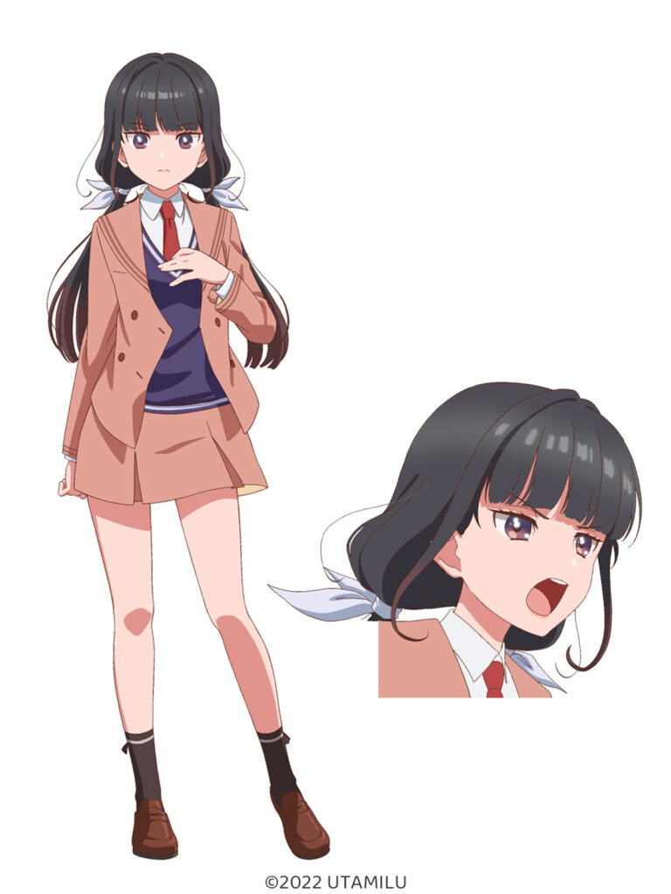
繭森結
うたごえはミルフィーユ
以阿卡貝拉為題材，讓角色故事與聲優實際歌唱活動彼此連結。
官方角色設定圖 · eeo Media ↗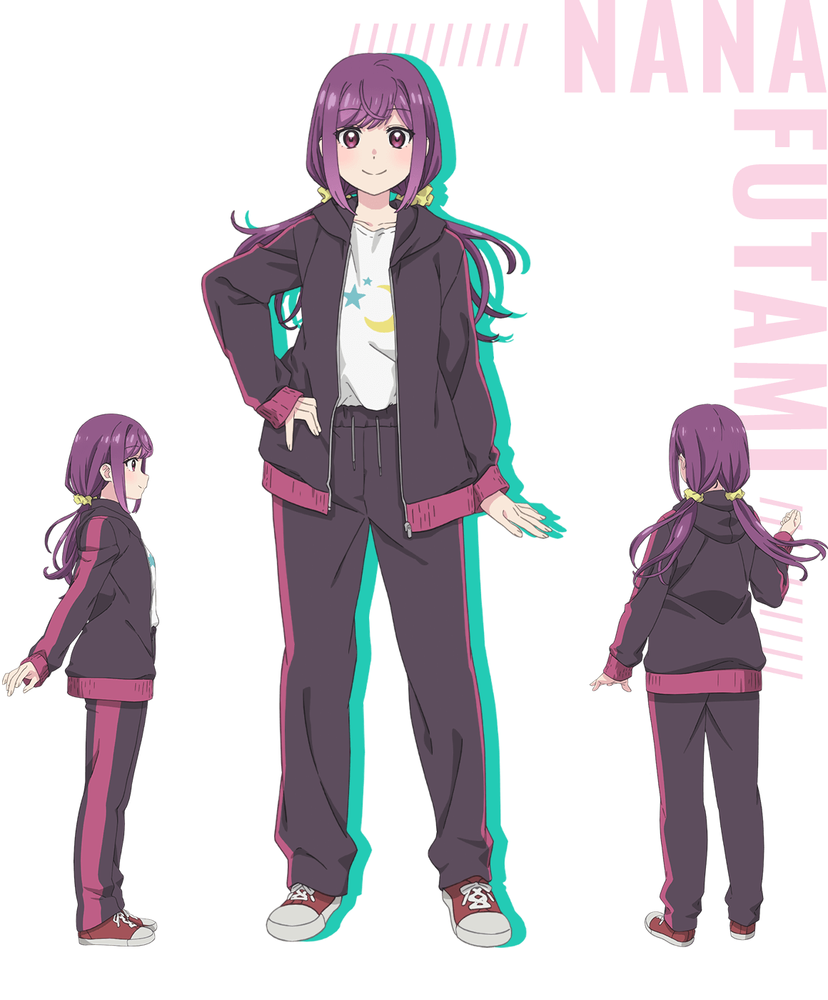
双見奈々
笑顔のたえない職場です。
另一部由夏吉擔任主角的作品，擴展這份手帖的閱讀清單。
官方圖片來源 ↗千砂 / 杏山カズサ
ブルーアーカイブ -Blue Archive-
我的最愛。親密、黏人的語氣，讓我先記住了這隻「甜點貓」，再開始追著夏吉的其他作品聽。
官方圖片來源 ↗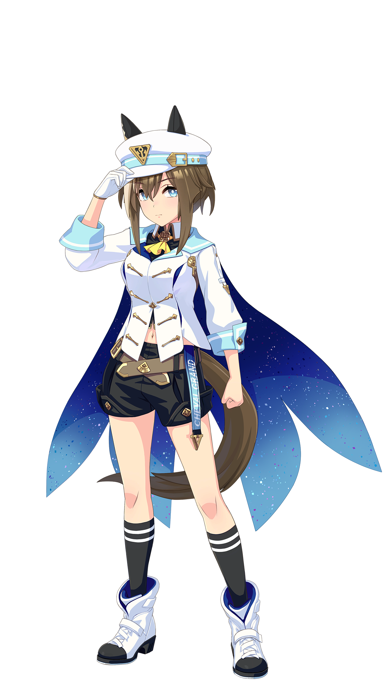
シュヴァルグラン
ウマ娘 プリティーダービー
從賽馬娘的角色演出，認識另一個夏吉的聲音。
官方圖片來源 ↗白井夢結
アサルトリリィ Last Bullet
延續動畫與舞台的角色，也是系列跨媒介作品的一部分。
官方圖片來源 ↗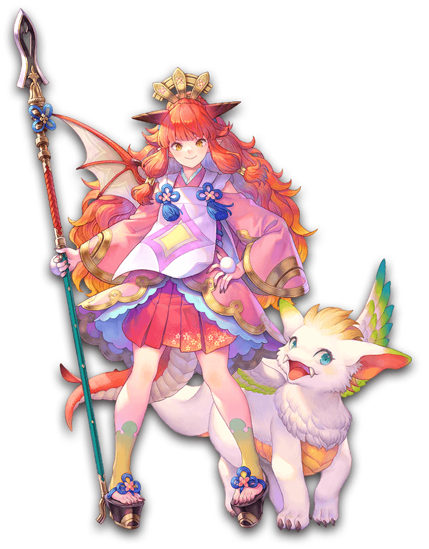
カリナ
聖剣伝説 VISIONS of MANA
她在《聖劍傳說》系列作品中的遊戲配音。
官方圖片來源 ↗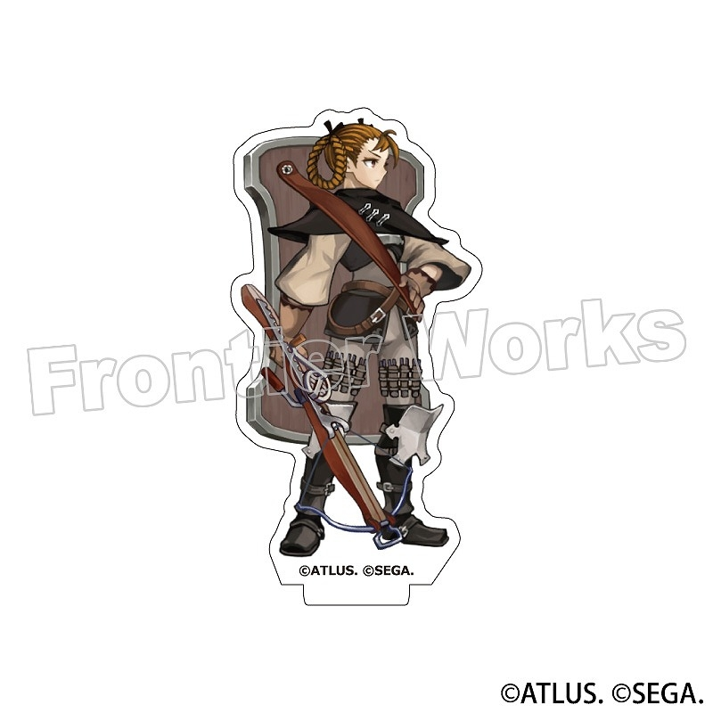
リーザ
ユニコーンオーバーロード
將遊戲配音收藏延伸到這部策略角色扮演作品。
官方授權商品圖 · animate ↗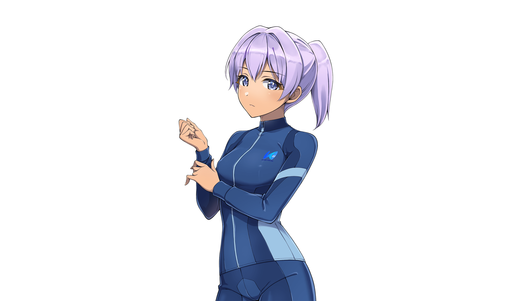
相馬颯
ドルフィンウェーブ
另一個可從官方出演表繼續探索的遊戲角色。
官方圖片來源 ↗Arika
2022 年 8 月開始活動，由主唱夏吉ゆうこ與作曲家、吉他手大和組成。這裡可以聽到她以音樂組合成員身分呈現的作品。
認識 Arika ↗うたごえは
ミルフィーユ
以人聲合奏、女子高中生與青春為題材的音樂企劃。夏吉飾演繭森結，並與其他成員參與歌唱活動。
作品官方網站 ↗角色裡的歌
從《SHOW BY ROCK!!》與《シャインポスト》，到《超時空輝夜姬》，也可以沿著角色作品找歌，感受表演與歌唱如何相互延伸。
回到 THE FIRST TAKE ↑出演與活動資料：賢プロダクション官方介紹 ↗ · うたミル官方網站 ↗
最初讓我停下來的是角色，讓我一直想看下去的，則是她本人。
接下來，從哪裡聽起？
先認識一個角色
從千砂、莎夏或白井夢結開始，留意她如何透過語氣和節奏，讓不同角色成立。
回到作品列表 ↑只聽聲音本身
官方 Voice Sample 整理了台詞、旁白與自由談話。拿掉畫面後，可以更專心聽聲音的變化。
聽官方樣本 ↗沿著歌聲繼續走
從角色歌延伸到 Arika，再走進其他日文音樂。把下一首想聽的歌，留給 J-POP 唱片架。
前往 J-POP ↗讓聲音自己介紹。
台詞、旁白、自由談話，還有音樂。
從官方試聽開始，找到不同的表演面貌。